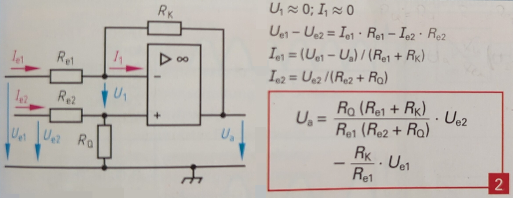

Control
Interface & Requirements
- Voltage Input
ref&meas- Voltage Input Swing \(V_{in} \in [0V, +5V]\)
- Input Current \(| \pm I_{in} | \leq 2.5mA\)
- Voltage output
out- In phase with \(V_{ref}\)
- \(V_{out} \in [-5V, 10V]\)
- Output current \(I_{out \pm} \geq \pm 20 mA\)
- Supply Voltages
- \(+10V\) @ \(300mW\) (\(30mA\))
- \(-5V\) @ \(150mW\) (\(30mA\))
Circuit Selection and Design
Circuit
As the circuit a classical control loop is selected with a reference that should
be tracked by minimizing the error.
The PID controller is implemented by using a parallel form by implementing the
individual components proportional, integral and derivative term as
individual opamp circuits. A summing opamp is used to add the contributions of
the individual terms to produce the overall controller output signal out.
The controller terms and summing junction can also be implemented using a
single opamp, but the individual realization of the terms is chosen in order to
easily vary the controller parameters during the prototyping stage as per
recommendation of Prof. Spiegelberg.
The difference junction is implemented using a standard subtraction circuit from literature 1: 
Circuit Derivation
Considering an ideal operational amplifier in inverting configuration connected with two impedances. The positive input terminal of the opamp connected to a shared reference voltage (ground).
- \(Z_1\) from input voltage \(U_e\) to the negative input terminal of the opamp
- \(Z_2\) feedback from the output to the negative input terminal of the opamp
the transfer function is then
When the circuit desired should be constructed from RC components only to form the impedances \(Z\) for cost reasons, the following two fundamental networks can be combined. Considering the electrical network at the negative input of the opamp, while neglecting the current flow into the opamp input the current flow \(I_{Z_1} = I_{Z_2}\). Assuming stability of the circuit the voltage at the negative input terminal will be \(V_{-} = V_{+} = 0V\). Therefore the impedance \(Z_1 = \frac{1}{Y_1}\) can be viewed as a linear system which takes as an input a voltage and transforms it into a current. The impedance \(Z_2\) can be viewed as a linear system, which transforms this current in a voltage, which will be present at the output. The transfer function can therefore be thought of as
For each of the two fundamental networks two transformations can be associated. Those transformations can be combined to select the desired network at the desired position to obtain a desired transfer function.
- RC - Series network
- \(Z_{series} = \frac{U}{I} = R + \frac{1}{sC} = \frac{1+sRC}{sC}\)
Pole at origin, zero at \(-RC\) - \(Y_{series} = \frac{I}{U} = \frac{sC}{1+sRC}\)
Zero at origin, pole at \(-RC\)
- \(Z_{series} = \frac{U}{I} = R + \frac{1}{sC} = \frac{1+sRC}{sC}\)
- RC - Parallel network
- \(Z_{parallel}=\frac{U}{I} = \frac{1}{\frac{1}{R}+sC} = \frac{R}{1+sRC}\)
Pole at \(-RC\) - \(Y_{parallel}=\frac{I}{U} = \frac{1}{R} + sC = \frac{1+sRC}{R}\)
Zero at \(-RC\)
- \(Z_{parallel}=\frac{U}{I} = \frac{1}{\frac{1}{R}+sC} = \frac{R}{1+sRC}\)
The inverting opamp configuration allows to combine the transfer functions of one admittance and one impedance.
Feedback Impedance Constraints
The parasitic capacitance together with the resistance of \(R_{2}\) acts as a low pass filter, which adds a pole to the closed loop system. In order to neglect the influence of the pole it's frequency should be higher than the operating frequency. For the OPA2810IDR the parasitic capacitance is \(C_{parasitic} \approx C_{in} + C_{diff} = 5 pF\). For an operating frequency \(f = 1 MHz\) the feddback resistance is limited by: $$ R_{2} \lessapprox \frac{1}{2 \pi f C_{parasitic}} = 32 k \Omega $$
A lower limit of the feedback resistance is imposed by the maximum output current of the OPA2810IDR. The maximum continuous output current is \(40mA\), but to limit the thermal stress of the device the output current is desired to not exceed \(30mA\). The current available for the feedback path is the remaining current, which is not used for the following bias stage. $$ R_{2} > \frac{U_{signal,max}}{I_{out,max} - I_{bias}} \approx \frac{10V}{30mA - 20mA} = 1k \Omega $$
Difference Junction
To minimize the number of different components at unity gain for each channel of the subtraction circuit we choose \(R_{e1} = R_{e2} = R_K = R_Q\) and select a suitable value meeting the feedback impedance constraints.
Proportional Term
The proportional term is constant unity gain and amplified with a factor of \(K_P\) at the summing junction.
An inverting opamp configuration is selected with \(Z_2\) being a RC-parallel network and \(Z_1\) being a resistance.
The gain of \(-1\) can be achieved by selecting $$ R_1 = R_2 = 10 k \Omega $$
To facilitate a bandwidth limitation the capacitor \(C_2\) is used to introduce a pole at \(f = 10 M Hz\). $$ C_2 = \frac{1}{2 \pi f R_2} \approx 2 nF $$.
Derivative Term
The bandwidth limited derivative term is realized using the inverting opamp configuration with \(Z_1\) as a RC-series network and \(Z_2\) as a RC-parallel network. Selection of \(C_1\) with the defined derivative time \(T_D\) yields the value for \(R_2\): $$ C_1 = 10nF \land T_D = 80 \mu s \implies R_2 = \frac{T_D}{C_2} \approx 8.2 k \Omega $$
The two poles to limit the bandwidth of the derivative term are placed by the values of \(R_2 \land C_2\) and \(R_1 \land C_1\). To get approximately a cutoff frequency of the bandwidth limitation of \(f=10MHz\) the following values can be selected: $$ C_2 = \frac{1}{2 \pi f R_2} \approx 2nF $$ $$ R_1 = \frac{1}{2 \pi f C_1} \approx 1.6k \Omega $$
Variation of \(T_D\)
To achieve variation of \(T_D\) the resistance \(R_2\) can be changed by turning the trimmer in series with \(R_2\). For a value of \(R_{trim,d} = 10k \Omega\) the derivative time \(T_D\) can be tuned in the range: $$ R_{trim,d} = 10k \Omega \implies T_D \in [80\mu s, 184 \mu s] $$
The bandwidth limitation of the pole defined by \(R_2 \land C_2\) the cutoff frequency is reduced as the derivative time is increased. Which will limit the overall additional gain of the derivative term to a maximum of: $$ A_{d,max} = \frac{R_2}{R_1} \approx 11 \approx 21 dB $$
Integral Term
The integral term is realized using an inverting opamp cinfiguration with \(Z_1\) as a resistance and \(Z_2\) being a capacitance. When selecting \(C = 10nF\) the resistance can be derived for a given integration time \(T_I\). $$ C = 10 nF \land T_I = 318 \mu s \implies R = \frac{T_I}{C} \approx 33 k \Omega $$
Variation of \(T_I\)
The variation of \(T_I\) is achieved by using a trimmer in series with the resistance to increase the resistance if desired. $$ R_{trim,i} = 100k \Omega \implies T_I \in [318 \mu s, 1.33 ms] $$
Anti Integral Windup
To avoid the integration to high limits during non-linear operation, when e.g.
the output voltage can not rise to the required level to reduce the controller
error to zero, diodes are connected antiparallel to the capacitance of the
integrator.
A voltage equal to the required offset introduced by the "rubber diode" of the
bias stage in the powerelectronics is expected to be present across the
integration capacitance. Therefore multiple diodes can be connected in series
to allow the desired integration voltage.
$$ n_{diodes} = \left\lceil \frac{max(U_{offset})}{U_f(I_f)} \right\rceil $$
For \(max(U_{offset}) \approx 2V \land U_f(I_f \approx 4mA) \approx 600mV
\implies n_{diodes} = 4\).
When the offset is adjusted to a lower value sparse diodes may be bridged by a
solder bridge. In the reverse direction a single diode is sufficient, because
no windup is expected due to the bias offset.
Summing Junction
The summing junction is implemented using a non inverting amplifier configuration. By selecting the same input resistances for each input signal the voltage is simply the average of the input signals. And can be amplified by the non inverting amplifier. The non inverting summing configuration is preferred, because of its superior input impedance compared to the inverting configuration at higher gain. The input resistances can be selected to be equal: $$ R_{in,p} = R_{in,i} = R_{in,d} = 10 k \Omega $$
Because the averaging of the signals reduces the influence of each individual signal by a factor of \(n\) for \(n\) individual signals the gain \(g\) shall be selected to compensate the effect. $$ K_P = \frac{g}{n} \implies g = K_P \cdot n = 15 $$
With the gain \(g = \frac{R_2}{R_1} + 1\) and a feedback resistance of \(R_2 = 4.7 k \Omega\), the resistance \(R_1\) can be found: $$ R_1 = \frac{R_2}{g - 1} \approx 330 \Omega $$
Variation of \(K_P\)
To vary the gain and therefore \(K_P\) a trimmer in series with the feedback resistance \(R_2\) of \(R_{trim,p} = 10k \Omega\) is used. Which allows to vary the proportional term in the range of: $$ R_2' = 4.7k \Omega \land R_{trim,p} = 10k \Omega \implies K_P \in [5, 15] $$
High Impedance Input Drive
To drive the inputs in a defined state when no preceding stage is connected
either during testing or when the limit-logic is performing a mode transition
and the multiplexer is switching in a gapping manner high impedance input drive
is used. The high impedance makes it possible to override the signal by a low
impedance source from the multiplexer. The reference ref of the controller is
connected to some voltage which it should follow, and the measurement meas of
the controller is connected to the output of the controller. The feedback path
from the controller output to the meas input can be neglected during the
normal operation of the controller, because the voltage on both terminals of
the resistor is driven by low impedance sources. Similarly, the voltage high
impedance voltage source driving the reference ref can be neglected during
normal operation, because the reference voltage will be driven by a low
impedance voltage source, which delivers the required current to force the
voltage across resistance of the high impedance voltage source.This assumes the
current through the resistance is small enough to be driven by both sources.
The high impedance of the input drive is connected in series to the resistors \(R_{e1}\) and \(R_{e2}\) during gapping operation. Therefore the gain of the difference junction is reduced. To obtain equal reduction of gain the impedance of the feedback resistance should be equal to that of the voltage source connected to the reference.
A value of $$ R = 1 M \Omega $$ can be chosen for the feedback resistor and the impedance of the voltage source, which is able to
- neglect the currents required to drive the normal voltages during normal operation
- neglect the input currents required by the operational amplifier during gapping operation
- enable reuse of existing pull up/down resistors and increase the quantity of a single component value
To choose an appropriate "default" voltage for the controller reference during gapping a constant voltage can be used. This will yield easy implementation, but introduces unnecessary voltage swing of the controller, when the default voltage is not inside of the interval defined by the voltage before and after the switching. To reduce the amount of unnecessary voltage swing a RC-lowpass filter is used to obtain the reference voltage during normal operation and keep it almost constant during the gapping switching. This requires that the switching time is much smaller than the time constant of the filter, which is in turn smaller than the time spent in normal operation. $$ t_{transition} \approx 330ns << \tau_{RC} << t_{normal} \gtrapprox 1s $$
Normal Operation Time
The time used for \(t_{normal}\) is based on the expected behavior of connected loads to the powersupplysink. It is therefore tied to the expectations an user might have on the device (requirements) and not based on simulation or of physical meaning.
The time constant be chosen to be approximately \(10ms\) which allows to reuse the \(10nF\) capacitances of the controller with C0G dielectric. $$ \tau_{RC} \approx 10ms \implies C = 10nF $$
Because the RC-lowpass is connected and discharged to ground via \(R_{e2}\) and \(R_Q\) of the difference junction after \(t \rightarrow \infty\) the reference voltage will reach \(0V\).
Component Selection
Operational Amplifier
OPA2810IDR Selection (sort by Price): \(n_{Ch} >= 2\), \(GBWP \approx 100 MHz\), 15V VCC, \(SR \approx 150 V / \mu s\)
GBWP & SR
The GBWP is approximated by using the approximate oparating frequency \(f\) of the closed loop control loop and the desired gain \(K_P\). $$ GBWP \approx f \cdot K_P = 10 MHz \cdot 10 $$ The slew rate is approximated by taking the maximum slope of a sine wave at maximum amplitude at the approximated operating frequency. $$ SR \approx 2.5V \cdot 10 MHz \cdot 2 \pi $$
Capacitances
Selection from family of capacitors of:
- Ceramic MLCC surface mount
- Manufacturer: Kemet
- Dielectric: C0G
- Size: 0805 (imperial)
- Tolerance: 5%
- Voltage: 50V
Example 470pF capacitor.
Anti Windup Diode
1N4148W-7-F Selection (sort by Price) from search on Mouser
- Small Signal Switching Diode
- in Stock
- SMD/SMT
- Forward Current \(I_f > 10mA\)
- Recovery Time \(\leq 5ns\)
Simulation
Simulation example can be found in ./sim_control_*.asc.
Hierarchical simulation block is available as ./control.asc and
./control.asy.
Hardware tests in Laboratory
Layout and Assembly Considerations
PCB Layout
- Consider OPA2810 Datasheet Section 11 Layout
- Low impedance decoupling of opamp
- Low impedance feedback of opamp (avoid parasitic capacitance)
- (Dis-) connector between controller and powerelectronics, (solderbridge / jumper) Label with testname hint
- Add optional connectors from
outtomeasfor unity plant test. - Pull up/down for inputs, when stage is isolated, to run other tests.
- Add test pins for: trimmers,
out,ref,meas,error,derivative,integralandproportional
Assembly
Commissioning and Testing
- Tune trimmers to
- \(T_D\) derivative trimmer to \(R = 0 \Omega\).
- \(T_I\) integral trimmer to \(R = 0 \Omega\).
- \(K_P\) proportional trimmer to \(R = 0 \Omega\).
- Pass all tests for
control. - If all tests for powerelectronics are passed connect control and powerelectronics.
Sign Propagation
Test ID: v1.0.1/pss/control/sign-propagation/<suffix>
- Connections
- Output
outdisconnected - Input
measconnected to \(U_{meas} = 0V\) - Input
refconnected to \(U_{ref} = +500mV\)
- Output
- Power on supply voltage
- Wait for steady state \(t_{wait} \gtrapprox 1ms\)
- Measure Voltages
- Error Signal (test id suffix:
error)- Voltage at subtraction output \(U_{e}\)
- Output Signal (test id suffix:
output)- Voltage at PID controller output \(U_{out}\)
- Error Signal (test id suffix:
- Power off supply voltage
- Test passed if
- Error Signal (test id suffix:
error)- \(U_{e} \in -500mV (1 \pm 10\%)\)
- Output Signal (test id suffix:
output)- \(U_{out} \in 10V (1 \pm 10\%)\)
- Error Signal (test id suffix:
Closed Loop Stability for Unity Plant
Test ID: v1.0.0/pss/control/stability-unity-plant/<suffix>
- Connections
- Output
outdisconnected from following stage - Input
measconnected to outputoutof PID controller - Input
refconnected to \(U_{ref} = 2.5V\)
- Output
- Power on supply voltage
- Wait for steady state \(t_{wait} \gtrapprox 1ms\)
- Measure Voltages
- Voltage series $u_{out}(t) at PID controller output with oscilloscope for \(t = 1s\)
- Power off supply voltage
- Disconnect input
measfrom outputoutof PID controller - Test passed if
- Mean Value (test id suffix:
mean)- \(\overline{u_{out}(t)} \in 2.5V (1 \pm 1\%)\)
- Output Signal Boundedness (test id suffix:
bounds)- \(\forall t u_{out}(t) \in 2.5V (1 \pm 1\%)\)
- Mean Value (test id suffix:
Note
Passing test bounds implies, that test mean is passed. Separation of
test is conducted to make information of instability visible in test report,
even when the mean is accurately tracked.
-
Europa-Lehrmittel, Tabellenbuch Elektrotechnik, 2018 ↩